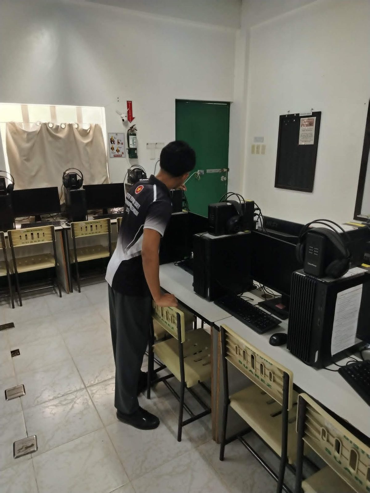
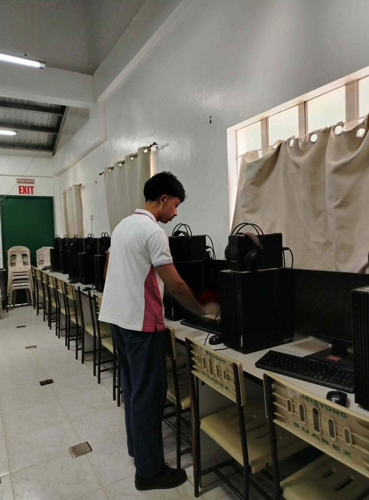
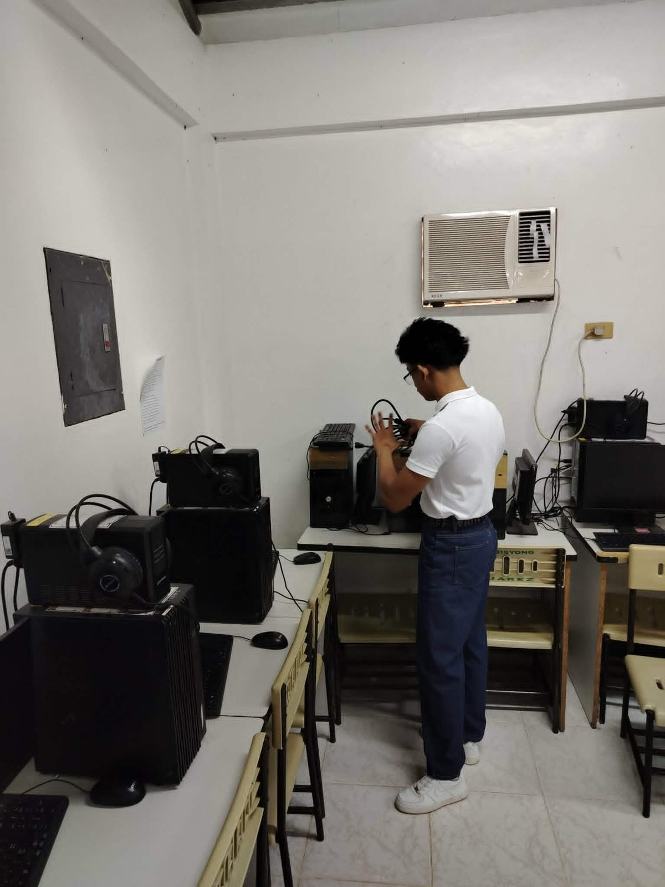
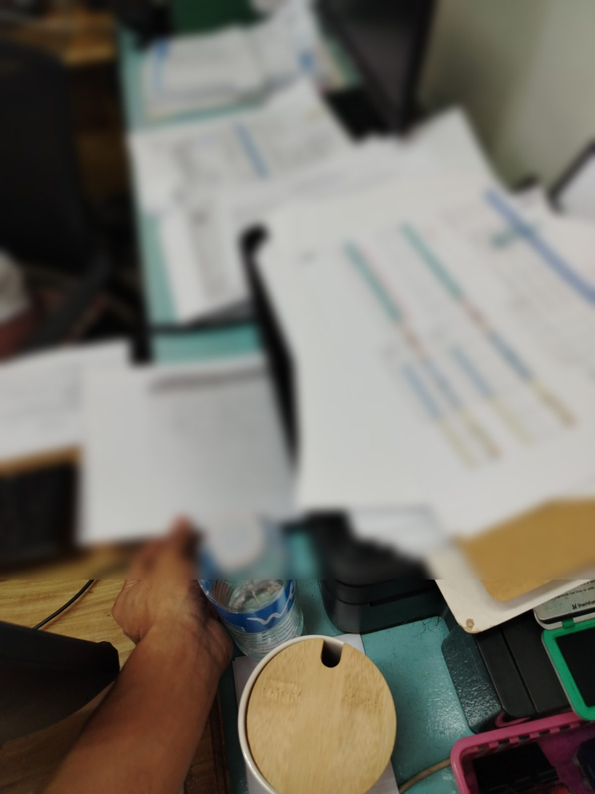
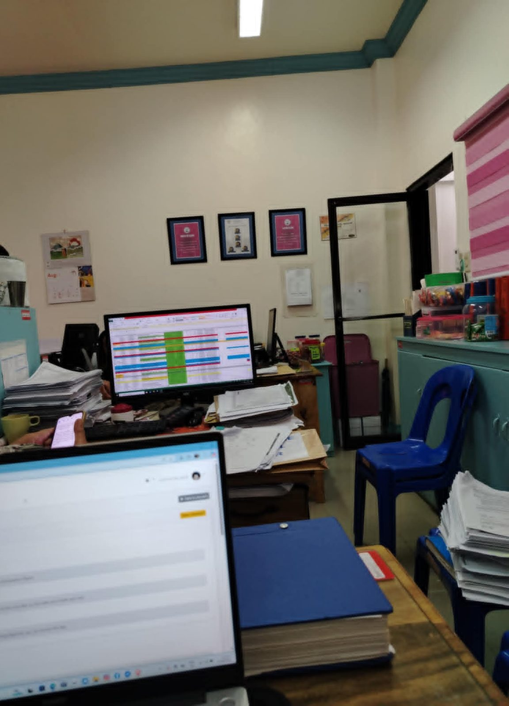
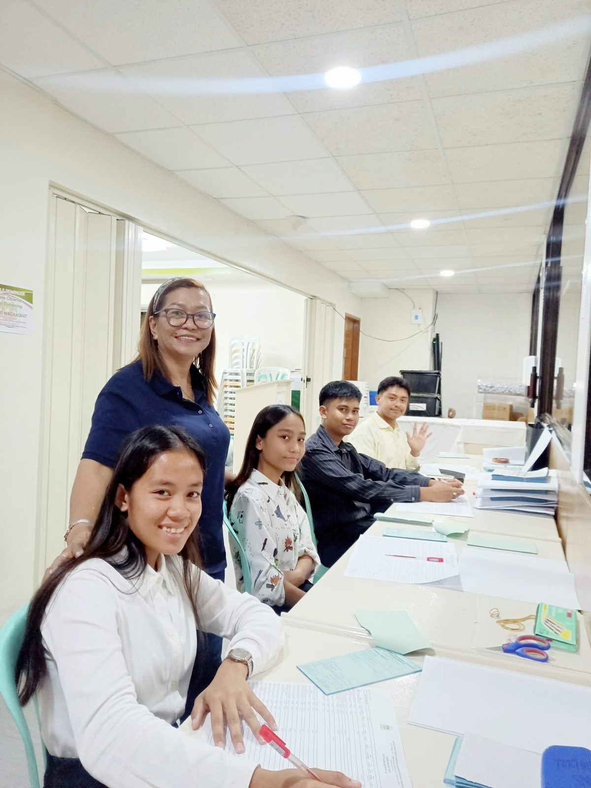
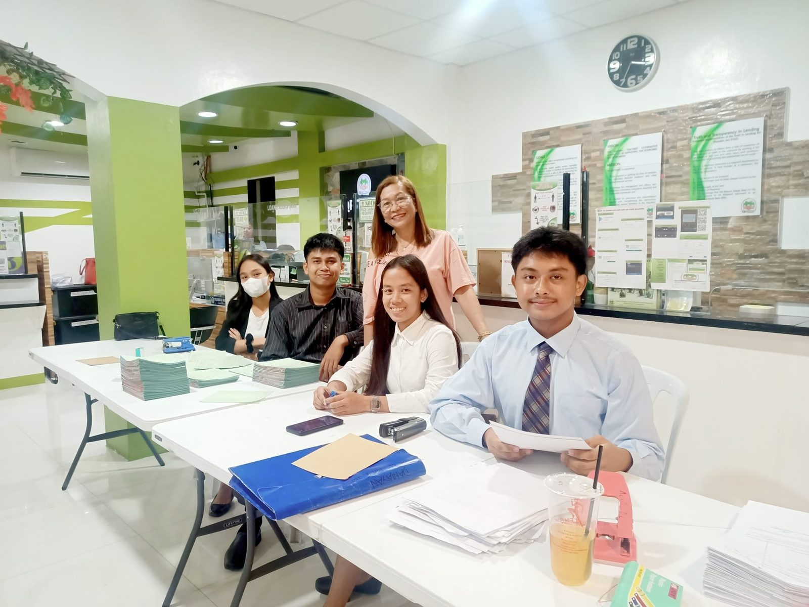
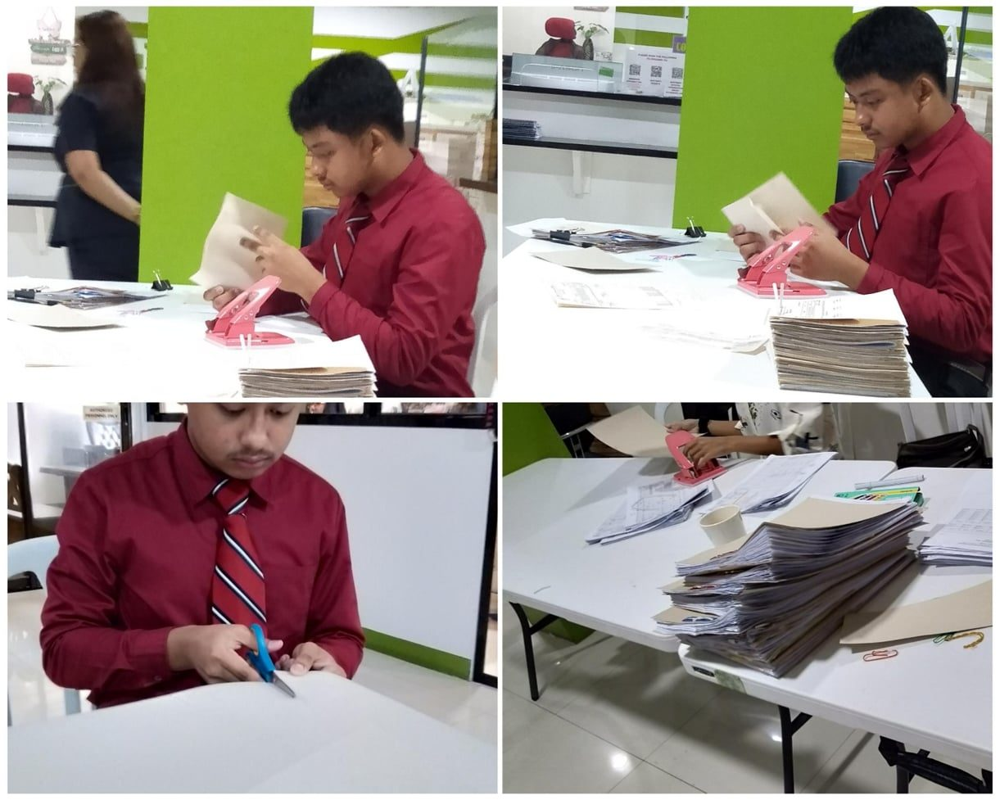

Polytechnic University of the Philippines
Diploma in Information Technology
2023 - 2026A highly motivated fresh graduate of the Diploma in Information Technology program with a strong aptitude for rapid learning and adaptability. Eager to apply technical competencies while embracing diverse roles beyond IT to gain hands-on experience, contribute effectively, and drive continuous professional growth. Want to learn more about me? Click About me above.
Hire meDiploma in Information Technology
2023 - 2026Humanities and Social Sciences (Senior High School)
2021 - 2023Junior High School
2017 - 2021Primary School
2011 - 2017Proficient in applying AI in workflows and project development
Polytechnic University of the Philippines Unisan Campus, Quezon
February 2026 - March 2026
Municipal Office (Munisipyo) of Padre Burgos, Quezon
July 2025 - September 2025
QPSTEMPC, Lucena City
March 2023
Polytechnic University of the Philippines Unisan Campus, Quezon



Municipal Office of Padre Burgos, Quezon


QPSTEMPC, Lucena City



from Polytechnic University of the Philippines Unisan Campus, Quezon. I graduated with a Diploma in Information Technology.
Hello recruiters, I'm John Michael L. Nadal. I'm 21 years old, born on July 27, 2005. I want to use my knowledge and skills to contribute significantly to your company and to broaden my horizons so I can be flexible across many areas of knowledge. If you're looking for someone who is trustworthy, competent, skilled, blunt, and perspicacious, then consider me as one of your employees. As I can assure you that though I don't know anything, but I can guarantee you that I can learn, show up, help, collaborate and take feedbacks lightly yet seriously. I hope you consider me as a part of your team.